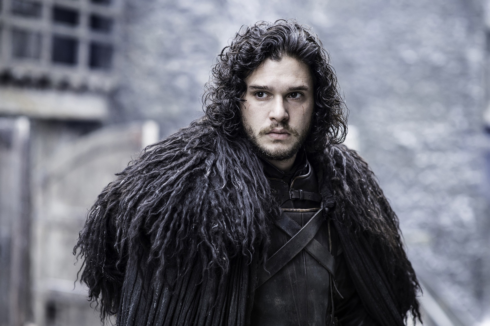
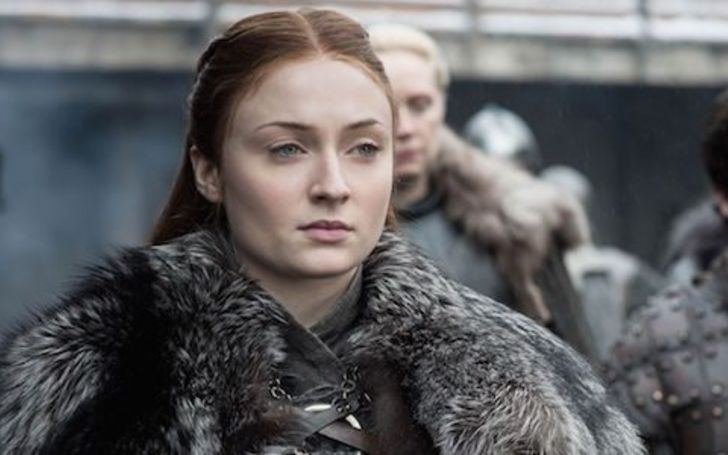
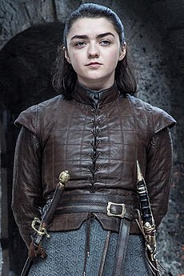

Jon Snow

Jon Snow, nascido Aegon Targaryen, é o filho de Rhaegar Targaryen e Lyanna Stark, fez sua primeira aparição em "O Inverno está Chegando".
Quando Eddard Stark voltou para casa após a Rebelião de Robert, ele apresentou Jon como seu filho bastardo, nunca dizendo a ninguém, nem mesmo a Jon, quem era sua mãe. Eddard tomou a incomum decisão de criar Jon em seu castelo em Winterfell junto de seus filhos legítimos - causando tensão com sua esposa Catelyn Tully.
Quando Lorde Eddard Stark parte para Porto Real, Jon se vê obrigado a se juntar à Patrulha da Noite. Na muralha ele faz bons amigos e alguns inimigos, comanda a missão de vingar Jeor Mormont e a defesa na batalha contra os selvagens, ele é eleito Lorde Comandante realizando feitos como liberar a passagem dos Selvagens pela muralha e ter um bom contato com eles, feito que ocasiona a sua morte por traidores, após isso ele é ressuscitado por Melisandre e perde o gosto pela Patrulha. Ele reencontra Sansa Stark e junto à ela parte para o Norte para tomar Winterfell, antigo lar de sua família que estava sobre o domínio dos Bolton.
Ele recruta os Selvagens e algumas Casas aliadas e parte para a batalha, perdendo seu primo Rickon e vencendo a batalha somente com a ajuda dos Cavaleiros do Vale, dessa forma Winterfell volta ao domínio dos Stark.
Na verdade, Jon nunca foi filho de Eddard, mas sim o herdeiro secreto de sua falecida irmã, Lyanna Stark, e do Príncipe Rhaegar Targaryen de Pedra do Dragão. Jon nasceu na Torre da Alegria em Dorne, lugar onde Rhaegar e Lyanna ficaram escondidos durante um tempo. Sendo o único filho sobrevivente do Príncipe Rhaegar, ele potencialmente teria uma reivindicação melhor ao Trono de Ferro do que qualquer outra pessoa viva, incluindo a própria Daenerys Targaryen sua tia-amante, Bran Stark descobre este segredo por meio de suas Visões Verdes.
Seguido de sua participação na derrota da Casa Bolton, as Casas nobres do Norte novamente declararam independência, nomeando Jon como o novo Senhor de Winterfell e Rei do Norte.
Sansa Stark

"Eu fiz o que eu fiz para minha sobrevivência, minha senhora. Mas eu sou uma Stark, sempre serei uma Stark."
―Sansa Stark para Lyanna Mormont.
Princesa Sansa Stark, é uma personagem principal na 1ª, 2ª, 3ª, 4ª, 5ª e 6ª temporada. Ela é representada pela atriz Sophie Turner, e aparece pela primeira vez no primeiro episódio da série. Sansa é a primeira filha mulher de Lorde Eddard Stark e sua esposa Catelyn Stark, irmã de Robb, Arya, Bran e Rickon Stark, e meia-irmã de Jon Snow. Ela começa a série como uma garota petulante e sonhadora, com uma visão muito inocente do mundo, mas com o passar do tempo, com as crueldades cometidas com ela e sua família ela se torna uma mulher mais forte e individualista.
Arya Stark

"Meu nome é Arya Stark. Eu quero que você saiba disso. A última coisa que você verá será um Stark sorrindo para você enquanto morre."
―Arya Stark para Walder Frey antes de cortar a sua garganta para vingar sua família
Princesa Arya Stark é uma personagem principal nas temporadas 1, 2, 3, 4, 5, 6, 7 e 8. É interpretada por Maisie Williams e apareceu pela primeira vez em "O Inverno está Chegando". Arya é a terceira dos cinco filhos de Eddard e Catelyn Stark. Mais tarde ela é treinada para se tornar um Homem sem Rosto na Casa do Preto e do Branco em Braavos.